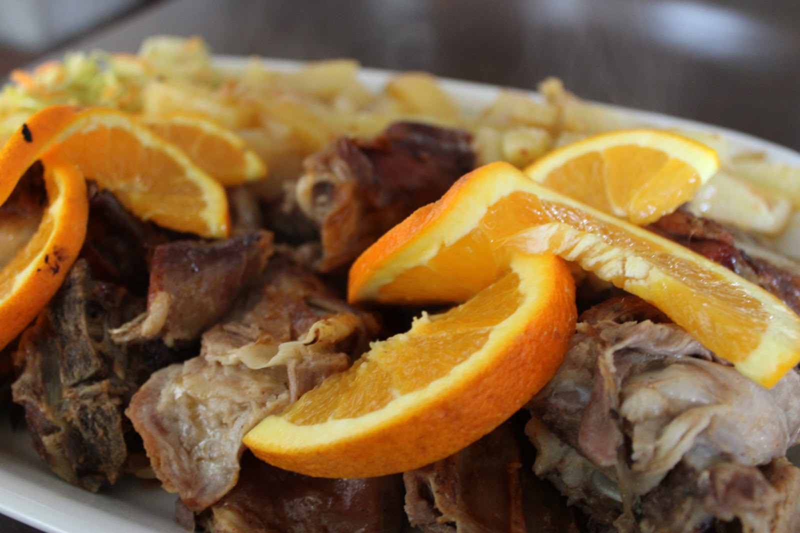
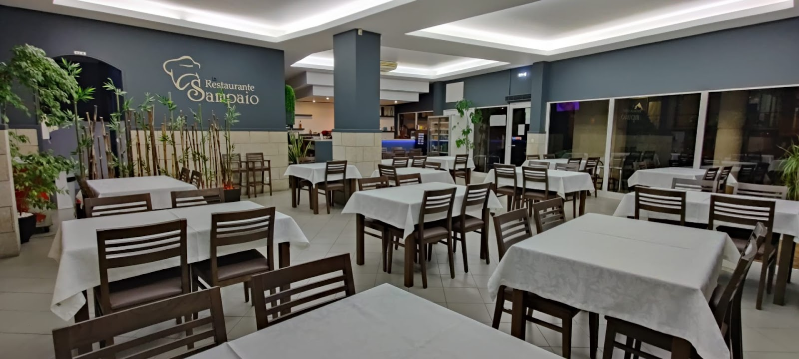
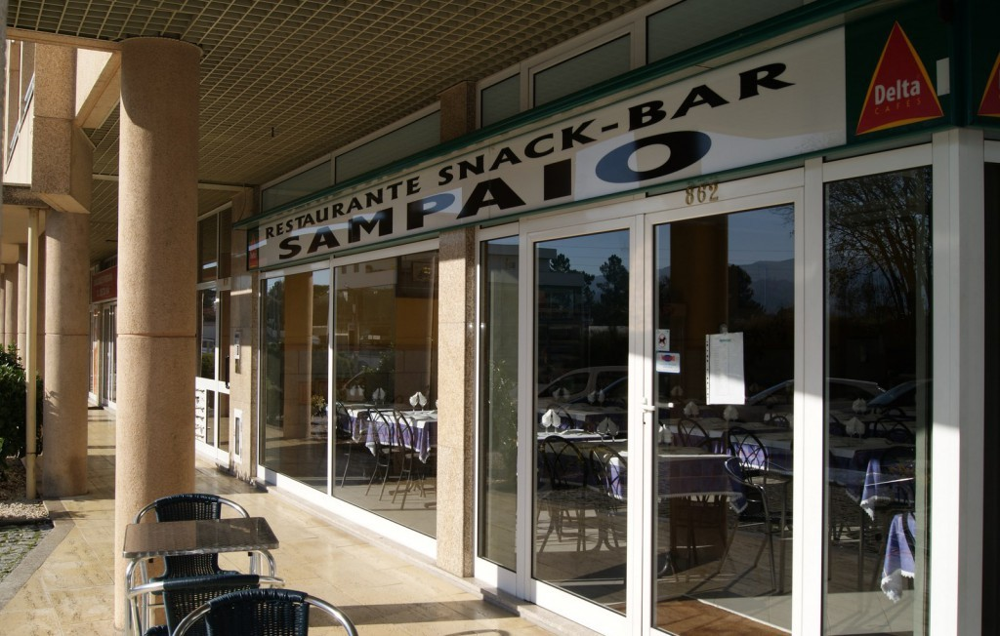
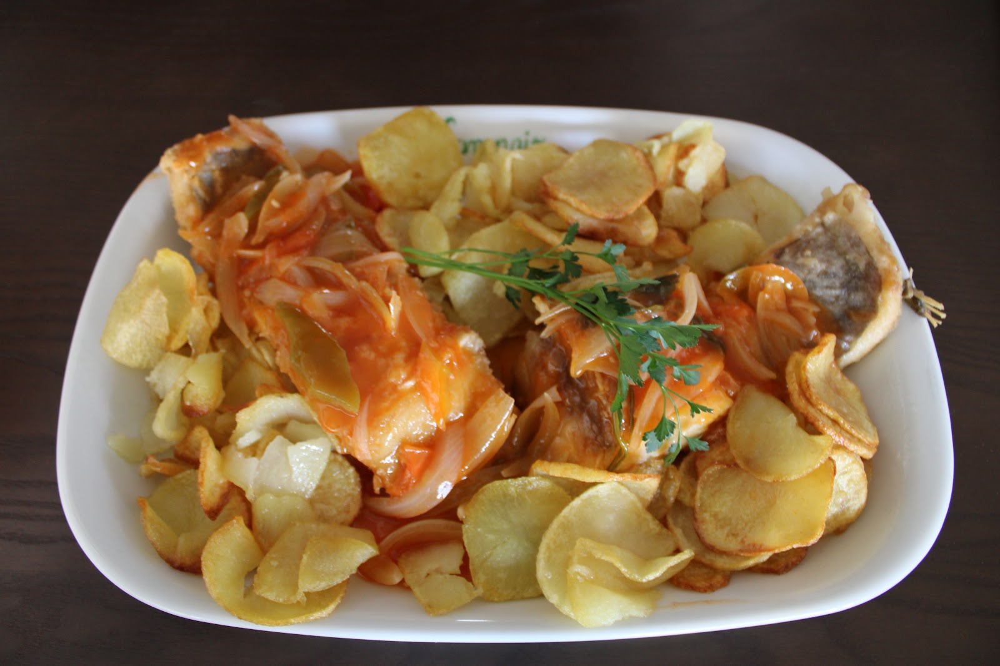
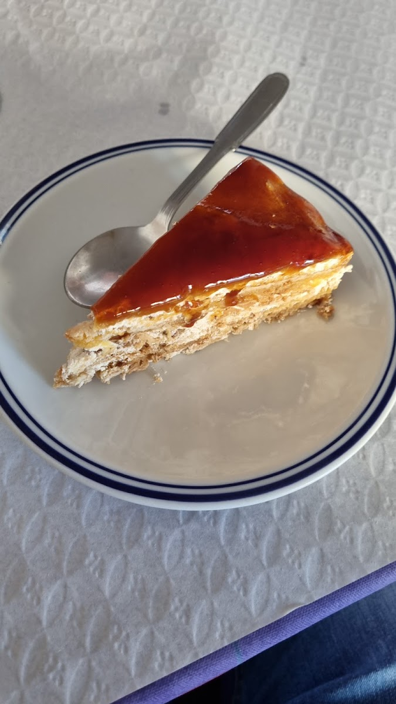
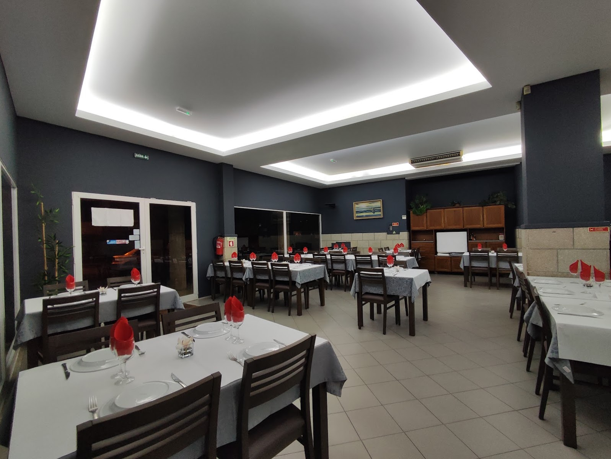
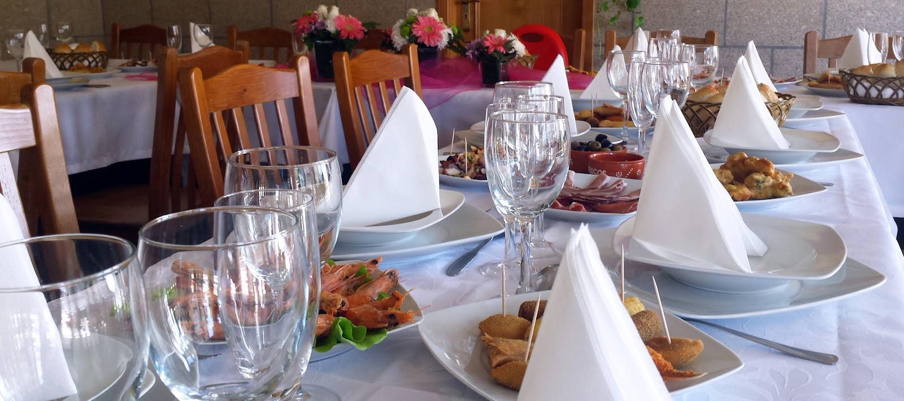

01
Sabores tradicionais
Conforto, tempo e saber fazer.
Cozinha portuguesa · Marco de Canaveses
Cozinha portuguesa, mesa generosa e um espaço preparado para receber — todos os dias e nos momentos que ficam.
O Restaurante
No Restaurante Sampaio, a cozinha portuguesa encontra uma sala contemporânea, ampla e pensada para receber com tempo.
Dos almoços do dia aos encontros em família, dos jantares tranquilos às celebrações, há uma mesa preparada para cada ocasião.
Conhecer os espaços

À nossa mesa
Produtos reconhecíveis, confeção cuidada e pratos feitos para partilhar — a identidade de uma cozinha portuguesa sem artifícios.

Conforto, tempo e saber fazer.

Pratos generosos e cheios de sabor.

Uma sobremesa e mais uns minutos à mesa.
Espaços & ocasiões
Do almoço espontâneo a uma celebração preparada ao detalhe, o Sampaio adapta-se à ocasião sem perder a proximidade.


Uma refeição descontraída, ao seu ritmo.
Mesas amplas para reunir família e amigos.
Um espaço versátil para dias especiais.
Os sabores da casa para levar consigo.
Tem uma ocasião em mente?
Falar connoscoGaleria
Espaços, detalhes e pratos do Restaurante Sampaio.
Visite-nos
Confirme o horário do dia no Google ou por telefone.
Informação útil
Para pedidos específicos ou grupos, fale diretamente connosco.
Sim. Ligue para o 255 534 540 para confirmar disponibilidade e número de pessoas.
O restaurante dispõe de espaço para grupos. Contacte-nos para preparar a disposição e os detalhes da ocasião.
Contacte o restaurante para confirmar os pratos disponíveis para levar no próprio dia.
Consulte a ficha Google ou confirme por telefone antes da deslocação, especialmente em feriados.
Contactos